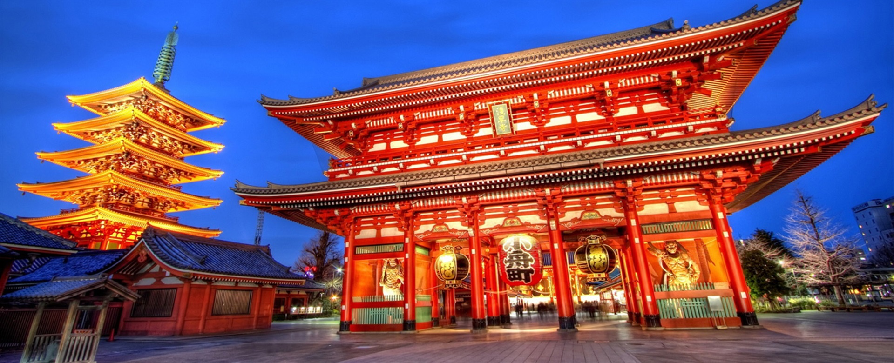
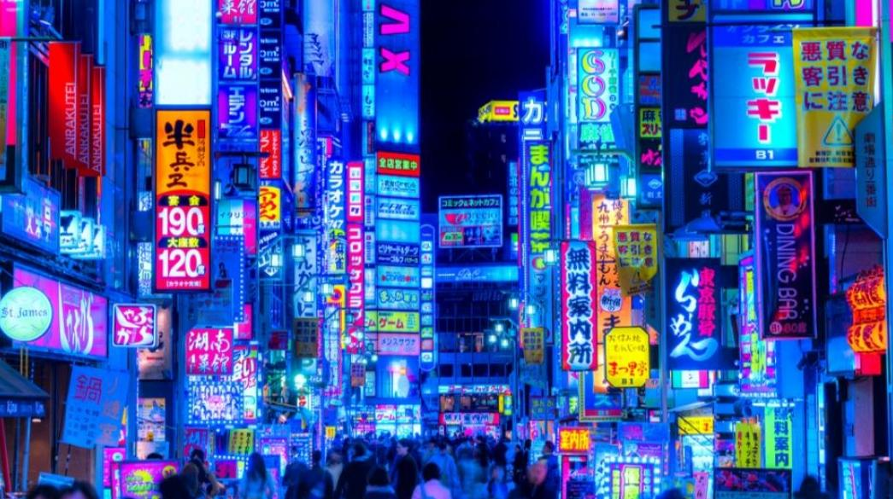
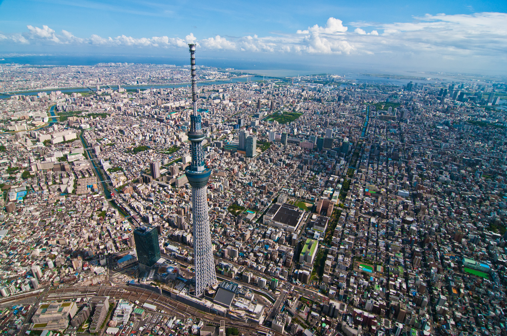

Japan[a] is an island country in East Asia. It is located in the Pacific Ocean off the northeast coast of the Asian mainland, and is bordered on the west by the Sea of Japan and extends from the Sea of Okhotsk in the north to the East China Sea in the south. The Japanese archipelago consists of four major islands—Hokkaido, Honshu, Shikoku, and Kyushu—and thousands of smaller islands, covering 377,975 square kilometres (145,937 sq mi). Japan has a population of nearly 124 million as of 2024, and is the eleventh-most populous country. Its capital and largest city is Tokyo; the Greater Tokyo Area is the largest metropolitan area in the world, with more than 38 million inhabitants as of 2016. Japan is divided into 47 administrative prefectures and eight traditional regions. About three-quarters of the country's terrain is mountainous and heavily forested, concentrating its agriculture and highly urbanized population along its eastern coastal plains. The country sits on the Pacific Ring of Fire, making its islands prone to destructive earthquakes and tsunamis.
The first known habitation of the archipelago dates to the Upper Paleolithic, with the beginning Japanese Paleolithic dating to c. 36,000 BC. Between the fourth and sixth centuries, its kingdoms were united under an emperor in Nara, and later Heian-kyō. From the 12th century, actual power was held by military dictators (shōgun) and feudal lords (daimyō), and enforced by warrior nobility (samurai). After rule by the Kamakura and Ashikaga shogunates and a century of warring states, Japan was unified in 1600 by the Tokugawa shogunate, which implemented an isolationist foreign policy. In 1853, a United States fleet forced Japan to open trade to the West, which led to the end of the shogunate and the restoration of imperial power in 1868. In the Meiji period, the Empire of Japan pursued rapid industrialization and modernization, as well as militarism and overseas colonization. In 1937, Japan invaded China, and in 1941 attacked the United States and European colonial powers, entering World War II as an Axis power. After suffering defeat in the Pacific War and two atomic bombings, Japan surrendered in 1945 and came under Allied occupation. After the war, the country underwent rapid economic growth, although its economy has stagnated since 1990.
Japan is a constitutional monarchy with a bicameral legislature, the National Diet. A great power and the only Asian member of the G7, Japan has constitutionally renounced its right to declare war, but maintains one of the world's strongest militaries. A highly developed country with one of the world's largest economies, Japan is a global leader in science and technology and the automotive, robotics, and electronics industries. It has one of the world's highest life expectancies, though it is undergoing a population decline. Japan's culture is well known around the world, including its art, cuisine, film, music, and popular culture, which includes prominent comics, animation, and video game industries.
